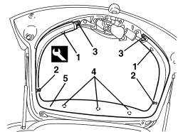

7015A06 TAILGATE UPPER INTERIOR PANEL - R.R.
- Path
- Procedures > 70 FITTINGS > 7015 TAILGATE/FLAP > 7015A TAILGATE ASSEMBLY > 7015A06 TAILGATE UPPER INTERIOR PANEL - R.R.
- Kind
- repair procedure (removal / refitting; the operation number is the code)
- Applies to
- all engines; all production periods
- Interactive page
- https://sloeber94.github.io/elrnDB-aBrrSpdr/en/#/946002545
Applies to: all engines; all production periods
 Removing
Removing
 Refitting
Refitting- Remove the rear parcel shelf.
Op. 7015A05 TAILGATE LOWER INTERIOR PANEL-R R
1. Release the retaining buttons using the special tool.
Tool | Description | Function | Validity |
|---|---|---|---|
1823015000 | Knife | Retainer removal |
2. Undo the rear parcel shelf mounting pins.
3. Undo the bolts.
4. Release the inner retainers using the special tool.
Tool | Description | Function | Validity |
|---|---|---|---|
1823015000 | Knife | Retainer removal |
5. Keep the panel.

Applies to: all engines; all production periods
Refitting
Removing- Check that the panel is not damaged.
- Position the panel and engage the inner retainers.
- Tighten the bolts.
- Tighten the rear parcel shelf mounting pins.
- Attach the retaining buttons.
Op. 7015A05 TAILGATE LOWER INTERIOR PANEL-R R
- Refit the rear parcel shelf.